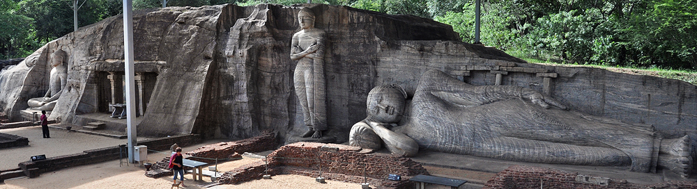

Experience the profound serenity of four majestic Buddha statues, seamlessly carved from a single granite rock face.
Gal Vihara, originally known as Uttararama, was part of the monastic complex built by King Parakramabahu the Great in the 12th century. It is the pinnacle of Sri Lankan rock carving, featuring four distinct Buddha statues: a large seated figure, a smaller seated figure, a standing figure, and a massive 14-meter reclining figure.
The statues are celebrated for their naturalistic expressions and the fluid treatment of the stone, seemingly defying the hardness of the granite. The reclining Buddha, depicting the Parinirvana (passing away), is one of the most iconic images of Sri Lankan Buddhism.
Back to Polonnaruwa Hub